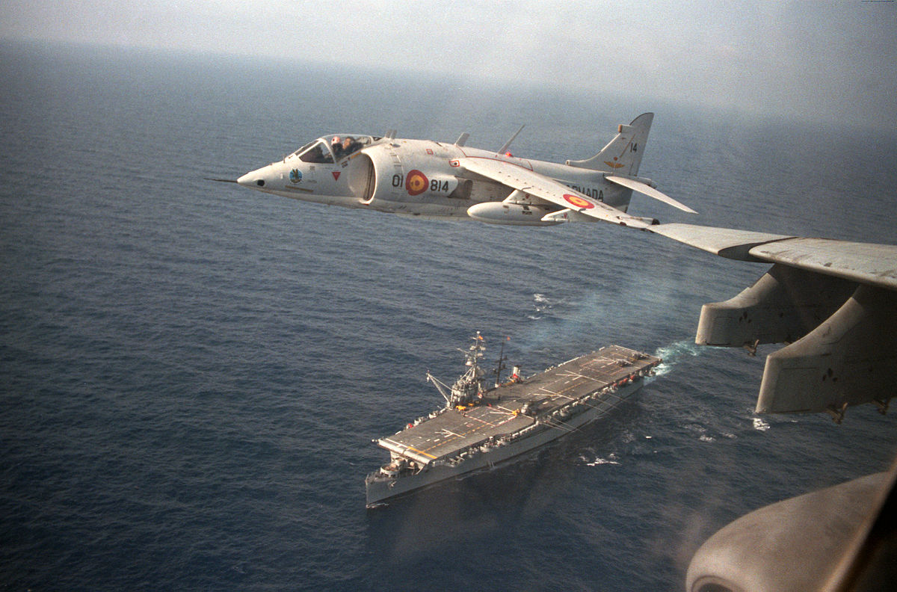
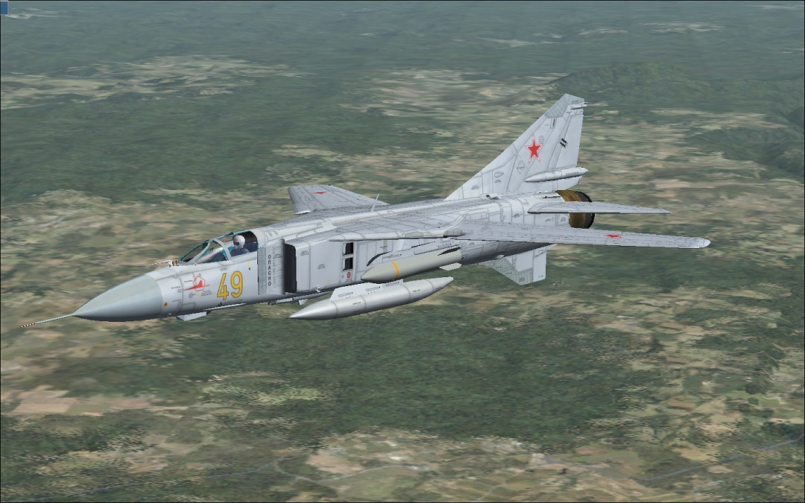
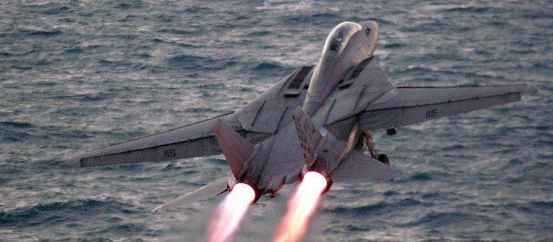
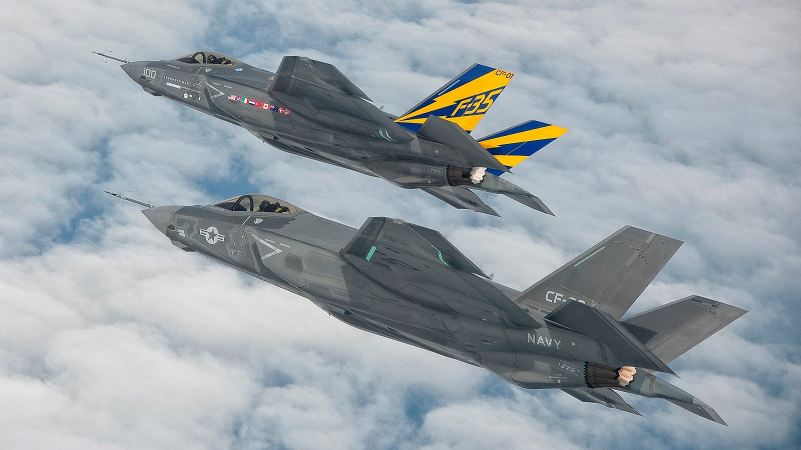

Fragment filmu Top Gun
Myśliwce pierwszej generacji (1944–1953):
Pierwszą generację reprezentują maszyny pionierskie w zakresie użycia silnika turboodrzutowego jako jednostki napędowej, zapewniającej znaczne zwiększenie prędkości w porównaniu do napędu śmigłowego, którego sprawność spadała wraz ze zbliżaniem się do prędkości dźwięku. Wiele pierwszych myśliwców odrzutowych przypominało pod wieloma względami samoloty o napędzie śmigłowym, będąc konstrukcjami o prostych skrzydłach, uzbrojonych w działka i nieposiadających radaru. Pomimo niezaprzeczalnych zalet, konstrukcje wczesnych myśliwców odrzutowych były dalekie od doskonałości. Charakteryzowały się one dużymi rozmiarami, delikatną konstrukcją i żywotnością silników mierzoną w godzinach. Ponadto zwiększanie obrotów musiało odbywać się bardzo powoli, aby nie dopuścić do zgaśnięcia silnika i w konsekwencji nieuniknionej katastrofy. Pierwsze myśliwce odrzutowe zostały opracowane pod koniec II wojny światowej i weszły do służby w jej końcowej fazie.
Dassault MD 450 Ouragan
Messerschmitt Me 262

North American F-86 Sabre

MiG-15
Myśliwce drugiej generacji (1953–1960):
Druga generacja to samoloty, w których użyto wielu ówcześnie najnowocześniejszych technologii, a najważniejszą z nich było zastosowanie kierowanych pocisków rakietowych powietrze-powietrze, co w połączeniu z radarem stanowiącym już standardowe wyposażenie wydłużyło dystans prowadzenia walk powietrznych nawet poza zasięg wzroku. Konstruktorzy eksperymentowali z różnymi kształtami skrzydeł od skośnych, w kształcie delty, czy ze zmienną geometrią, oraz konstrukcją kadłubów zgodnie z regułą pól. Samoloty ze skośnymi skrzydłami stały się pierwszymi seryjnie budowanymi maszynami zdolnymi przekraczać barierę dźwięku. W późniejszych konstrukcjach drugiej generacji, jak MiG-21 czy F-4 Phantom, wprowadzono regulowane wloty powietrza, które miały zapewniać lepsze osiągi przy naddźwiękowych prędkościach.

Chengdu J-7
Dassault Super Mystère
McDonnell Douglas F-4 Phantom II
Su-11
Myśliwce trzeciej generacji (1960–1970):
W trzeciej generacji myśliwców skupiono się na dopracowaniu i udoskonaleniu rozwiązań technicznych wprowadzonych w poprzednich generacjach. Kluczową ideą dla ich rozwoju stała się koncepcja zmiennej geometrii skrzydeł. W pełni rozstawione skrzydła miały grubszy profil, a skrzydła niewielki skos, co ułatwiało lądowanie. Maksymalnie złożone skrzydła stawiały mniejsze opory przy przekraczaniu prędkości dźwięku. A w położeniu pośrednim samolot miał toczyć walkę manewrową. Niestety rozwiązane to wiązało się ze znacznym wzrostem masy i nie były używane we wszystkich konstrukcjach tego okresu. Powszechna stała się również mechanizacja skrzydła jak bojowe klapy i sloty. W oparciu o doświadczenia bojowe z pociskami kierowanymi zdano sobie sprawę, że w maszynach poprzedniej generacji nie doceniano znaczenia walki powietrznej na krótkich dystansach. W konsekwencji przywrócono pokładowe uzbrojenie strzeleckie, a zwrotność myśliwców znów stała się priorytetem.
Shenyang J-8
Dassault Mirage III
- 
Hawker Siddeley Harrier
- 
MiG-23
Myśliwce czwartej generacji (1970–1990):
Ze względu na ciągły wzrost kosztów nowoczesnych myśliwców oraz sukcesu samolotu F-4 Phantom II bardzo popularna stała się idea myśliwca wielozadaniowego i nawet maszyny początkowo projektowane do określonych zadań zaczęto przystosowywać do wykonywania różnych rodzajów misji. Maszyny takie wyposażano w uniwersalną awionikę, która mogła być przełączana w tryb ataku na cele powietrzne lub naziemne. Koszty opracowania nowych maszyn wciąż rosły, popychając projektantów, ze względów ekonomicznych, do budowy uniwersalnych samolotów wielozadaniowych. W odróżnieniu od myśliwców przechwytujących poprzednich generacji, większość nowoczesnych myśliwców przewagi powietrznej posiada zdolności do manewrowej walki powietrznej.
Chengdu FC-1
Dassault Mirage 2000
McDonnell Douglas F/A-18 Hornet
- 
Grumman F-14 Tomcat
Myśliwce piątej generacji:
Konstrukcja myśliwców najnowszej generacji łączy w sobie wielozadaniowość, cechę, na którą położono największy nacisk w poprzedniej generacji, w połączeniu z najnowszymi zdobyczami techniki, jak ciąg wektorowany, materiały kompozytowe, zdolność do lotów z prędkościami naddźwiękowymi bez użycia dopalaczy, nazywaną supercruise, oraz zmniejszenie wykrywalności przez radary dzięki technologii stealth, przede wszystkim zaś stopniem zaawansowania awioniki i sensorów samolotu. Obecne prace rozwojowe nad maszynami piątej generacji skupiają się właśnie nad zmniejszeniem sygnatury radarowej przez dopracowanie technologii stealth, zwiększenie zasięgu przy korzystaniu z prędkości supercruise oraz poprawieniu zdolności manewrowych.
- 
Lockheed Martin F-35 Lightning II
Shenyang J-31
Su-57
Mitsubishi X-2
Myśliwiec szóstej generacji: (how to: make another spaceship)
Mianem szóstej generacji określa się przyszłe myśliwce, które będą bardziej zaawansowane niż myśliwce piątej generacji. Jedyny myśliwiec szóstej generacji, o którym wiadomo, że jest planowany, to F/A-XX. Ma on zastąpić Boeinga F/A-18E/F Super Horneta po roku 2030. Podczas gdy rosja tkwi technicznie nadal w 4 generacji mimo, że Mig, SU oraz Jak pracują razem nad jedną wersją!